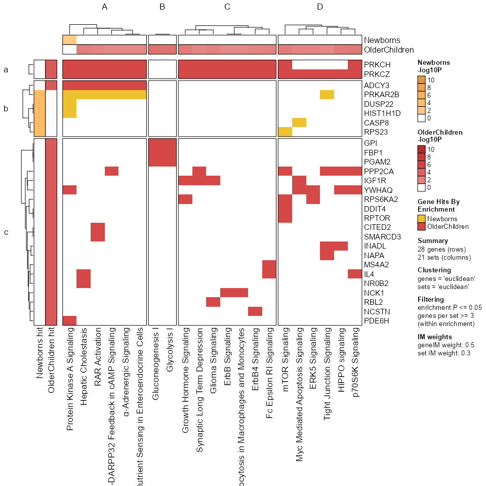
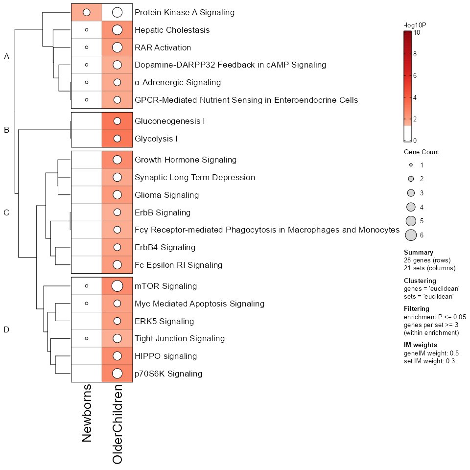
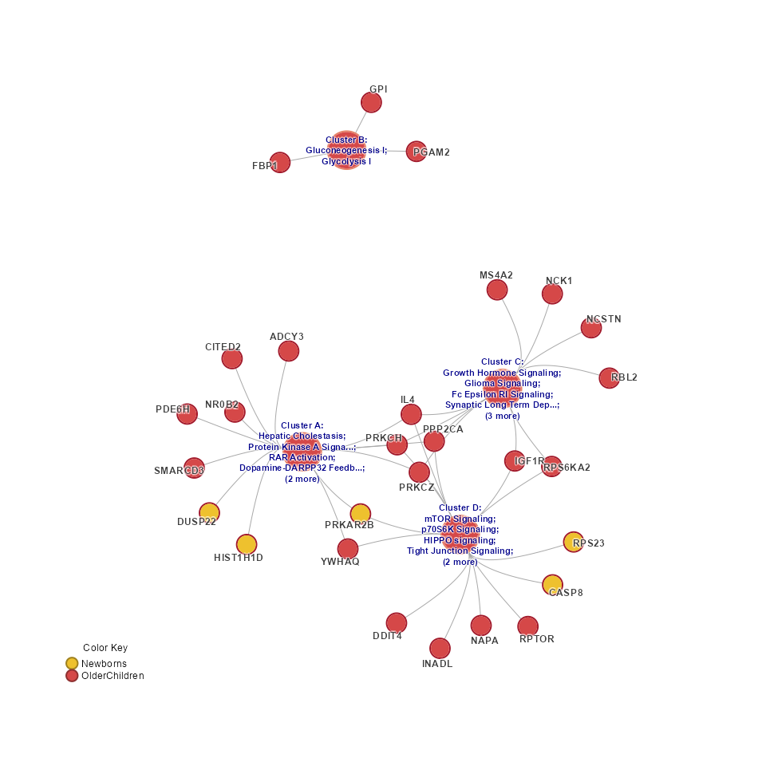

The goal of multienrichjam is to enable Multi-Enrichment Analysis of multiple gene set pathway enrichment datasets together.
This work was inspired by complementary tools based originally upon “Enrichment Map”, a Cytoscape plugin developed by the lab of Dr. Gary Bader.
- Bader lab EnrichmentMap from Merico,et al, PLoS One, 2010
Similar methods were implemented in R by the group of Dr. Guangchuang Yu, notably within the suite of clusterProfiler tools which include enrichplot::emapplot() and ggtangle::cnetplot() among numerous other powerful tools.
Multi-enrichment analysis is designed to complement existing tools, while focusing on the details of comparing multiple enrichment results together.
How to install
Install using the remotes package:
# if necessary, install 'remotes'
# install.package("remotes")
remotes::install_github("jmw86069/multienrichjam",
upgrade="always",
build_vignettes=TRUE,
dependencies=TRUE);Alternatively, use the pak package:
# if necessary, install 'pak'
# install.package("pak")
pak::pkg_install("jmw86069/multienrichjam",
upgrade=TRUE,
dependencies=TRUE);The argument dependencies=TRUE includes suggested packages, most notably the ‘openxlsx’ package which is used to import Ingenuity Pathway Analysis (IPA) results stored in Excel ‘xlsx’ format.
Quick walkthrough
Start with one or more enrichment results. Each enrichment result is either a data.frame or enrichResult from clusterProfiler, and must have the following columns:
- Pathway name: some identifier, name, or label
- Enrichment P-value: Typically adjusted P-value, or FDR
- genes: one field with genes involved in enrichment of each pathway
Any enrichResult will have this data already.
multiEnrichMap() to create Mem output
Mem <- multiEnrichMap(list(
Newborns=er_Newborns,
OlderChildren=er_OlderChildren))The output can be summarized by printing the object.
Mem
#> class: Mem
#> dim: 2 enrichments, 21 sets, 28 genes
#> - enrichments (2): Newborns, OlderChildren
#> - sets (21): mTOR Signaling, RAR Activation, ..., Gluconeogenesis I, Glycolysis I
#> - genes (28): ADCY3, CASP8, ..., SMARCD3, YWHAQ
#> Analysis parameters:
#> - top N per enrichment: 20
#> - significance threshold: 0.05 (colname: p.adjust)
#> - min gene count: 3
#> - direction colname:
prepare_folio() to create MemPlotFolio output
This step determines pathway clusters, and defines other custom features used to produce a “Mem Plot Folio” - which is a collection of data visualization plots to navigate the results.
Mpf <- prepare_folio(Mem)
GenePathHeatmap()
This step displays the underlying gene-versus-pathway data, and forms the basis for most of the multienrichjam analysis.
GenePathHeatmap(Mpf)
Pathways are clustered according to gene content. This step is intended to reduce redundancy, and to organize enrichment results based upon shared subsets of genes.
Genes are also clustered according to shared pathways, which can provide insights into the core genes involved across multiple pathways.
EnrichmentHeatmap()
This step displays the enrichment P-values in -log10 scale, using the same pathway clusters as defined in the gene-pathway heatmap.
EnrichmentHeatmap(Mpf)
CnetCollapsed()
The “Cnet collapsed” network represents the Concept Network (Cnet) plot using collapsed pathway clusters. The first step prepare_folio() is critical to define or customize the pathway cluster assignment.
CnetCollapsed(Mpf)
By default, the cluster titles (“A”, “B”, “C”, “D”) are displayed, however the pathways can be used to form a label.
CnetCollapsed(Mpf, type="set")
CnetExemplar()
A “Cnet exemplar” plot uses one exemplar pathway per cluster, providing an alternative network summary view.
CnetExemplar(Mpf)
A Cnet exemplar plot can also be created using user-defined pathways of interest.
Custom Cnet Exemplar
custom_sets <- c(
"RAR Activation",
"mTOR Signaling",
"Growth Hormone Signaling",
"Tight Junction Signaling")
cnet <- mem2cnet(Mem[, custom_sets, ], spread_labels=TRUE)
jam_igraph(cnet)
Note that this process is two-steps:
- Create the
cnetnetwork data. - Plot using
jam_igraph().